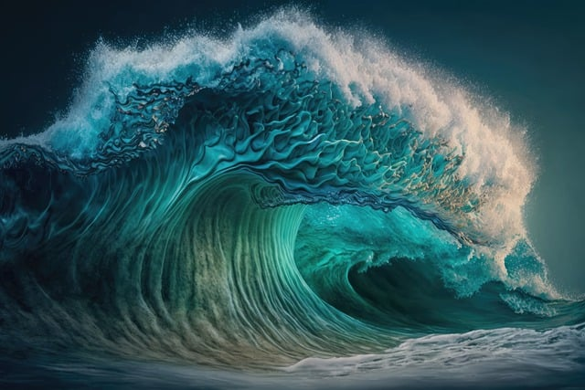
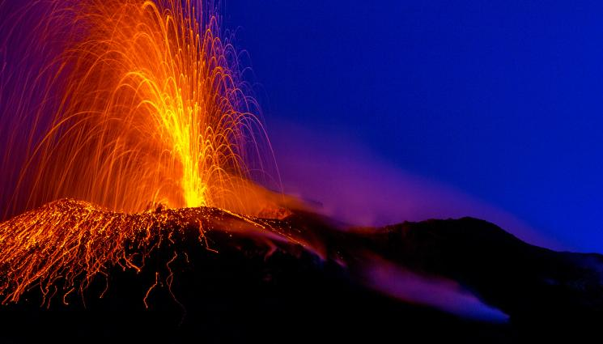
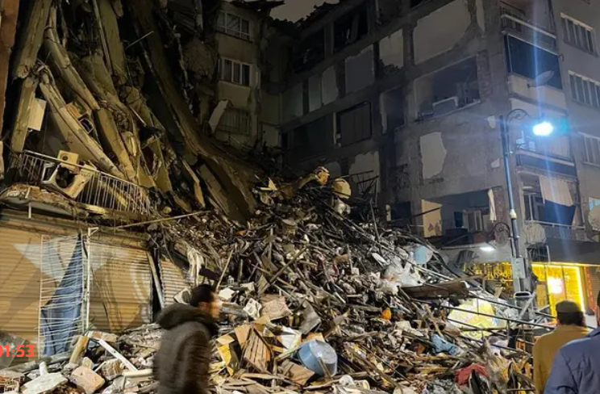

Цунами

Цунамито се генерира, когато подводно земетресение, вулканичен взрив или свлачище
раздвижват големи обеми вода. Обикновено това се случва, когато тектонични плочи в океанското дъно се движат
и
създават вертикално движение на водата. Това движение може да предизвика образуването на вълни, които се
разпространяват с огромна скорост през океана, понякога достигайки до 800-1000 километра в час.
Вулкани

Вулканът е пукнатина или кратер на земната кора, през която могат да изригват магма,
газове и други вещества от земните вътрешности. Когато магмата достигне повърхността, тя се нарича лава, и
при
охлаждането си тя образува различни геоложки структури, като лавови потоци, вулканични пепелища, кратери и
други.
Земетресения

Земетресението е внезапно и неочаквано освобождаване на енергия, което възниква
поради движения в земната кора, обикновено в резултат на сблъсък, раздалечаване или сриване на тектонските
плочи. Това освобождаване на енергия създава сеизмични вълни, които преминават през земните слоеве и могат
да
бъдат усетени на повърхността като тресеща сила.